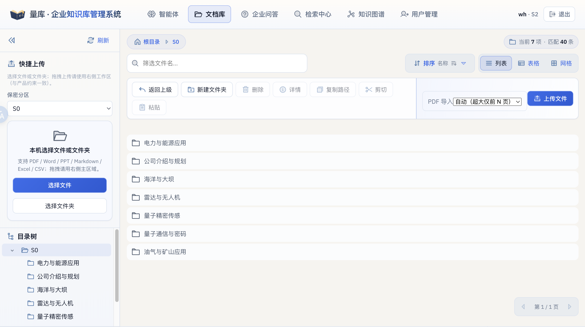
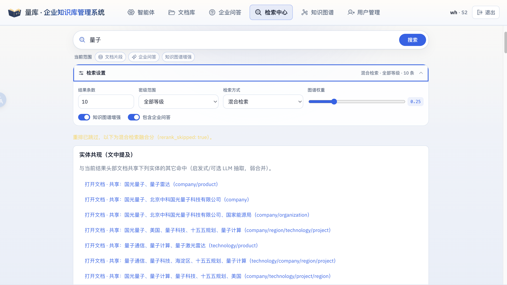
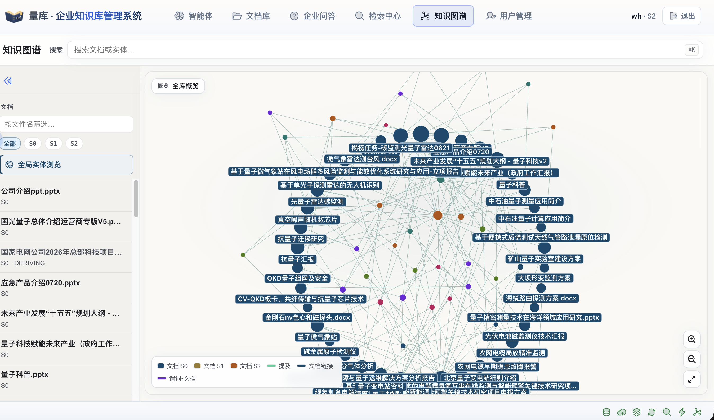
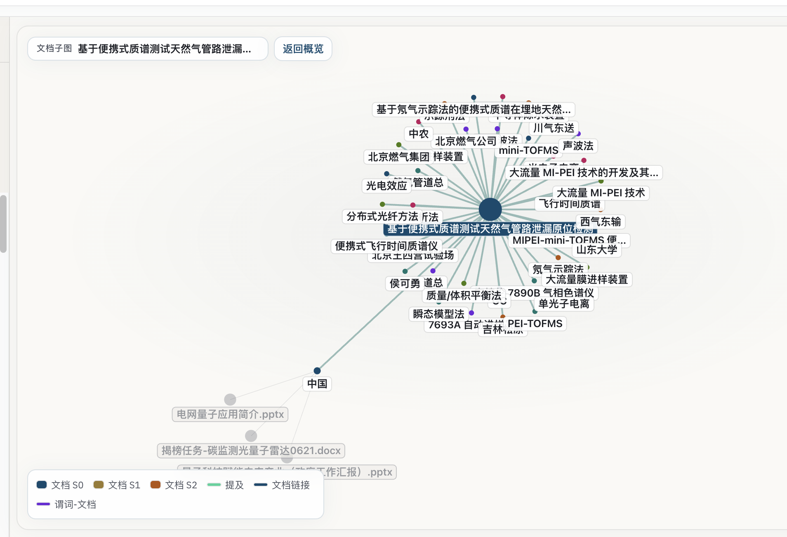
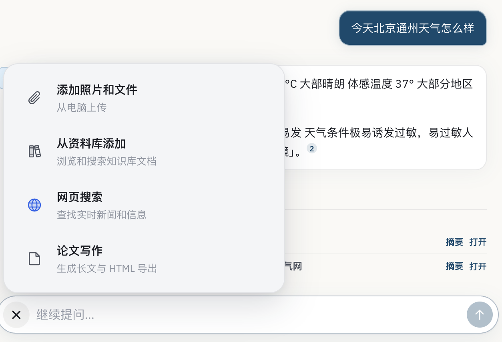
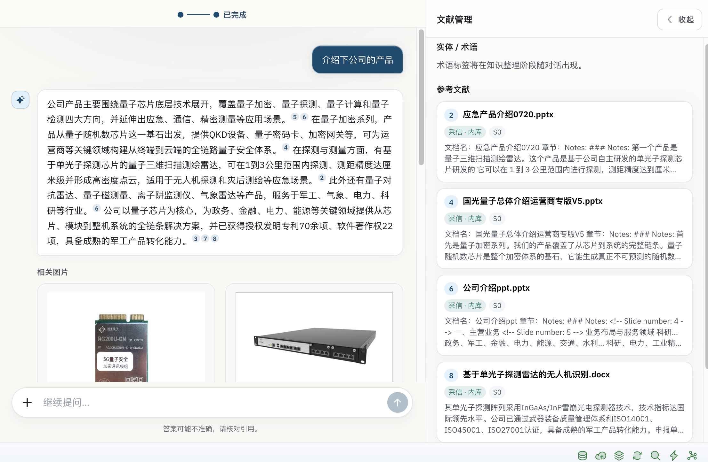
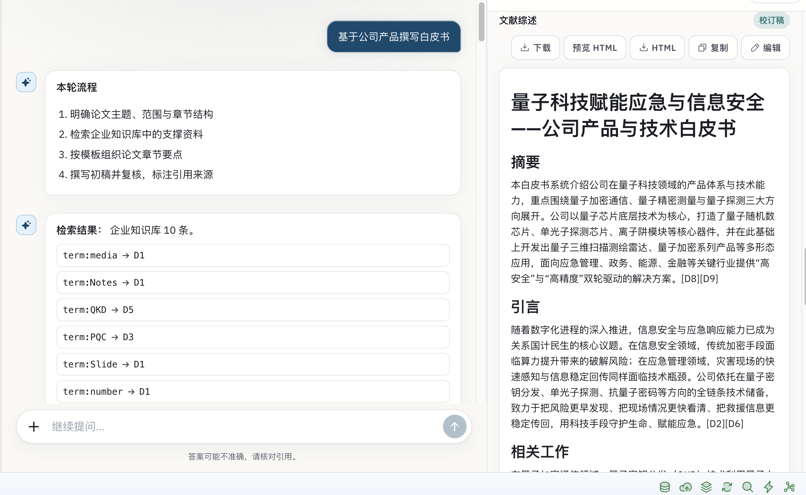
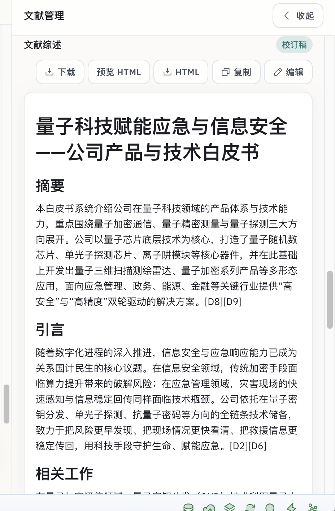
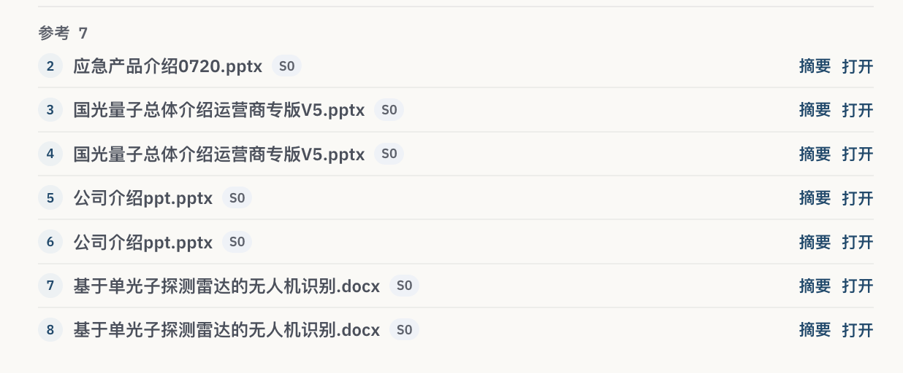
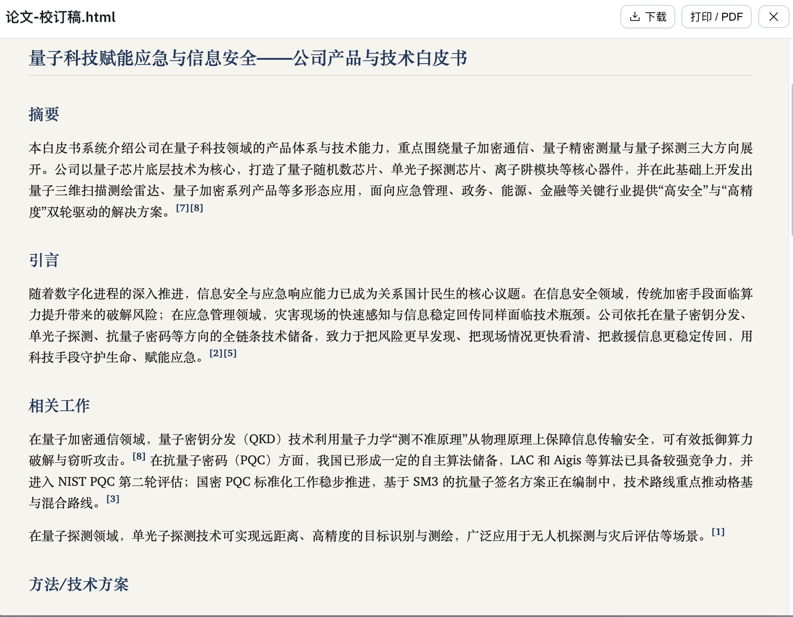

产品名称： 量库 · 企业知识库管理系统
适用对象：
已获准入的企业内部用户（含普通用户、文档管理员、角色管理员、超级管理员）
说明：
本文按实际界面截图编写，帮助您完成登录、管文档、检索、看图谱、用智能体写材料等日常操作。
1. 产品能做什么
量库把企业文档按保密分区入库，自动做成可检索的知识，并提供问答与写作辅助。日常可以：
| 您想做的事 | 去哪个模块 |
|---|---|
| 上传、整理、浏览资料 | 文档库 |
| 用关键词或一句话找原文片段 | 检索中心 |
| 看文档、人物、产品、项目之间的关系 | 知识图谱 |
| 问产品、查天气、写白皮书/综述，并核对出处 | 智能体 |
| 维护标准问答条目 | 企业问答 |
| 审批账号、调整密级与角色 | 用户管理（仅管理员可见） |
上传后的文档会进入处理流程（转成可读文本、建立检索索引、可选构图）。处理完成后，才能在检索、图谱和智能体中稳定命中。
2. 登录与注册
未登录时，打开站点会看到落地页：
- 点击 登录：输入企业邮箱与密码。
- 点击 注册：填写邮箱、密码（至少 8 位），昵称可选。
- 邮箱须符合本组织配置的后缀（例如仅允许公司域名）；不符合会被拒绝。
- 新注册账号默认进入 待审批。管理员在 用户管理 中通过后，才能使用文档库、检索等功能。
- 部分环境会显示人机验证（Turnstile），完成验证后再提交。
登录成功后，顶栏右侧显示 昵称 · 密级（例如
wh · S2）和
退出。点击昵称可进入个人中心（改昵称、改密码、管理 API
Token）。
3. 顶栏与模块一览
登录后，顶栏左侧为产品名 量库 · 企业知识库管理系统，中间为功能入口，右侧为账户区。
常见入口（从左到右）：
- 智能体：对话、网页搜索、论文写作、文献管理
- 文档库：网盘式浏览与上传
- 企业问答：维护/查阅标准问答
- 检索中心：混合检索与图谱增强
- 知识图谱：文档与实体关系可视化
- 用户管理：审批与权限（角色管理员 / 超级管理员）
当前所在模块会高亮。点左上角产品名可回到应用主页（工作台概览）。
4. 保密等级
系统用 S0 / S1 / S2 三个分区管理资料，S2 最高。
| 您的密级上限 | 能看到的资料 |
|---|---|
| S0 | 仅 S0 |
| S1 | S0、S1 |
| S2 | S0、S1、S2 |
说明：
- 列表、检索、图谱、智能体引用都受密级约束，看不到高于本人上限的内容。
- 超级管理员按最高密级处理。
- 上传时须选择目标分区；普通用户默认 不能 上传、删除、移动文档，这些操作需要 文档管理员 或 超级管理员。
5. 文档库
文档库采用「左侧导航 + 右侧工作区」布局，类似网盘。

5.1 左侧：快捷上传与目录树
快捷上传
- 在 保密分区 下拉框选择目标等级（S0 / S1 / S2）。
- 点击 选择文件 或 选择文件夹。
- 支持格式：PDF、Word、PPT、Markdown、Excel、CSV。
- 拖拽上传只允许落在右侧工作区，不要把文件拖到左侧目录树上。左侧树用于选目录、移动文件。
目录树
- 按分区展开子文件夹（如「电力与能源应用」「公司介绍与规划」等）。
- 点选节点后，右侧列表切换到该路径。
5.2 右侧：浏览与整理
- 面包屑（如「根目录 > S0」）显示当前位置。
- 筛选文件名：在当前目录下按名称过滤。
- 排序：可按名称等排序。
- 视图：在 列表 / 表格 / 网格 之间切换。
- 返回上级：回到上一层目录。
- 新建文件夹：在当前路径下建子目录。
选中文件或文件夹后，工具栏会激活：
| 按钮 | 作用 |
|---|---|
| 删除 | 删除原件（需确认；会同步清理检索与衍生内容） |
| 详情 | 打开预览抽屉，查看正文、元数据、分片、图谱关系等 |
| 复制路径 | 复制当前对象路径 |
| 剪切 / 粘贴 | 把文件移动到当前目录 |
5.3 上传文件与 PDF 导入
工作区右上角 上传文件 与左侧快捷上传效果相同，目标路径以当前面包屑为准。
PDF 导入 有三种模式：
| 模式 | 适用场景 |
|---|---|
| 自动（超大仅前 N 页） | 默认。特别大的 PDF 只处理前若干页，避免长时间卡住 |
| 指定页范围 | 只导入某几页 |
| 全文（耗时较长） | 需要整本入库时使用，等待时间更长 |
上传后请留意处理状态。就绪后才能稳定检索、构图和被智能体引用。
5.4 阅读文档
在列表中点开文档，右侧会滑出预览抽屉，可阅读转换后的 Markdown（含图片）、查看元数据，以及（若已构图）实体—谓词—文档关系。需要原件时使用下载入口，不要把「看转换结果」和「下载原件」搞混。
6. 检索中心
用于在全库中按问题或关键词查找 文档片段，并可同时纳入 企业问答 与 知识图谱增强。

6.1 发起检索
- 顶栏进入 检索中心。
- 在搜索框输入关键词或完整问句（例如「量子」）。
- 点击 搜索。
- 当前范围 会显示本次实际启用的来源，例如：
- 文档片段
- 企业问答
- 知识图谱增强
6.2 检索设置
展开 检索设置 可调节：
| 选项 | 说明 |
|---|---|
| 结果条数 | 返回条数，例如 10 |
| 密级范围 | 全部等级，或只搜 S0 / S1 / S2 |
| 检索方式 | 混合检索（语义 + 关键字，推荐）或 仅关键字 |
| 图谱权重 | 混合检索下，图谱信号参与排序的比重（图中为 0.25） |
| 知识图谱增强 | 开关。开启后用文档间关系辅助排序与发现 |
| 包含企业问答 | 开关。默认开启，关闭后只搜文档 |
若出现「重排已跳过」提示，表示二阶段精排未执行，列表仍按混合融合分排序，一般不影响继续阅读结果。
6.3 实体共现
结果上方可能出现 实体共现（文中提及）：与当前头部命中文档 共享同一批实体 的其它文档（公司、产品、技术、项目、地区等）。
- 每条形如：打开文档 · 共享：国光量子、量子雷达（company/product）
- 点击即可跳到对应文档。
- 适合从一篇材料扩到相关产品线、规划文件或技术报告。
结果卡片会给出片段、来源路径、密级和相关性分数。点卡片可回到文档库预览原文。
7. 知识图谱
把文档、实体（公司、产品、人名、项目等）以及它们之间的关系画成网络图。

7.1 进入与筛选
- 顶栏点击 知识图谱。
- 左侧可：
- 按文件名筛选
- 按密级切换 全部 / S0 / S1 / S2
- 点击 全局实体浏览，看全库实体关系
- 在列表中点选一篇文档，进入该文档的子图
- 顶部搜索框可搜 文档或实体，从下拉建议中选中即可定位。
主画布有 概览 / 全库概览 等视图。可用右下角 放大、缩小、适配视图 浏览。
7.2 如何读图
左下角图例：
| 图元 | 含义 |
|---|---|
| 深蓝圆 | 文档 S0 |
| 浅棕圆 | 文档 S1 |
| 深棕/橙色圆 | 文档 S2 |
| 绿线 | 提及（文中出现该实体） |
| 灰/深蓝线 | 文档链接（文档之间的引用或链接） |
| 紫线 | 谓词—文档（实体与知识客体之间的办公关系） |
圆点是文档或实体，连线是关系。点节点可展开邻居、切换到对应文档。
7.3 文档子图
在左侧点某一篇文档后，进入 文档子图：该文档居中，四周是它提到的机构、技术、地点，以及通过共享实体连到的其它文件。

操作提示：
- 标题栏显示当前文档名，例如「基于便携式质谱测试天然气管路泄漏…」。
- 点击 返回概览 回到全库视图。
- 沿实体（如「中国」）可跳到电网、碳监测等其它材料，用来做交叉阅读。
- 若提示图谱为空，多半是该文档尚未构图，可换一篇，或到文档库详情中手动触发生成（需相应权限）。
8. 智能体
智能体是三栏工作台：左侧对话历史、中间问答与步骤、右侧文献管理。适合查资料、对照出处、生成长文。
8.1 普通对话与附加能力
在输入框提问即可，例如「今天北京通州天气怎么样」。回答中的数字角标对应参考文献，可点 摘要 或 打开 核对来源。
点击输入框左侧 「+」，可选用：

| 功能 | 说明 |
|---|---|
| 添加照片和文件 | 从本机上传，作为本轮附件 |
| 从资料库添加 | 浏览、搜索知识库文档，勾选后作为指定参考 |
| 网页搜索 | 查找实时新闻与公开信息；再点一次可关闭 |
| 论文写作 | 进入长文模式，生成综述/白皮书，并导出 HTML |
输入框占位为「继续提问…」，右侧箭头发送。
8.2 带出处的产品问答与相关图片
问企业内部问题时，智能体会检索知识库，并在正文中用角标标出引用。

阅读要点：
- 左侧是回答；角标（2、4、5…）对应右侧文献编号。
- 相关图片 来自入库文档中的插图或产品照片，便于对照实物。
- 右侧 文献管理 列出本轮采用的资料，标签常见为 采信·内库 与密级 S0 等。
- 每条文献可看摘要或打开原文档。
- 顶部进度变为 已完成 后，本轮检索与生成结束。可用 收起 隐藏右侧栏以扩大阅读区。
冲突处理： 内库与网页同时有信息时，以企业内部库为准。
8.3 论文写作：流程可见、引用可追溯
打开 论文写作 后，可用自然语言下任务，例如「基于公司产品撰写白皮书」。也可选择模板：
- IMRaD 论文
- 技术报告
- 文献综述
系统会按固定步骤执行，而不是一次性抛出成稿：

典型四步：
- 明确题目、范围与章节结构
- 从企业知识库检索支撑材料
- 按模板整理各章要点
- 撰写初稿、校订，并标注引用（如
[D8][D9]）
左侧会列出检索到的条目及术语映射（如
QKD → D5），便于核对「这句话来自哪份材料」。右侧同步展示
文献综述 / 校订稿。
8.4 文献管理：下载、预览、编辑
右侧 文献管理 面板提供成稿操作：

| 按钮 | 作用 |
|---|---|
| 下载 | 下载 Markdown 文本 |
| 预览 HTML | 打开排版后的网页稿 |
| ↓ HTML | 下载自包含 HTML 文件 |
| 复制 | 复制正文到剪贴板 |
| 编辑 | 在面板内直接改稿 |
状态徽章 校订稿 表示已完成校订；此前可能显示「综述初稿」或「待撰写」。
参考文献列表按编号排列，每条显示文件名、密级，以及 摘要 / 打开：

建议成稿前逐条打开核对，避免同名材料被引用两次时选错版本。
8.5 美化预览与打印 PDF
点击 预览 HTML 后，会打开独立预览（文件名形如
论文-校订稿.html）：

预览页提供：
- 下载：保存 HTML
- 打印 / PDF：用浏览器打印对话框导出 PDF
- 关闭按钮：返回工作台
预览为论文式排版（摘要、引言、相关工作、方法等），适合汇报与存档。当前版本导出的是自包含 HTML，插图以内库已有图片为准。
9. 常见问题
Q：注册后进不去文档库？
A：新账号需管理员审批。请联系角色管理员或超级管理员，在
用户管理 中通过申请。
Q：为什么有的按钮是灰色的？
A：未选中文件时，「删除 / 详情 /
剪切」等不可用。另外，普通用户没有文档写权限，无法上传、删除、移动。
Q：上传了文件，检索却搜不到？
A：请等处理完成（文档状态就绪）。超大 PDF
若使用「自动」模式，可能只索引了前 N 页，可改为「全文」后重新导入。
Q：智能体回答没有图片？
A：只有知识库文档中已有、且能对应到当前回答的插图才会出现在
相关图片。纯文本材料不会凭空配图。
Q：图谱是空的或提示未就绪？
A：构图在文档处理之后异步进行。可稍后刷新，或换一篇已就绪文档。服务不可用时，检索和打开文档仍可正常使用。
Q：能看到别人的 S2 文件吗？
A：不能。可见范围由您的 密级上限 决定。顶栏「昵称 ·
S0/S1/S2」即当前上限。
Q：网页搜索和内部资料不一致怎么办？
A：以企业内部知识库为准；网页结果仅作补充。